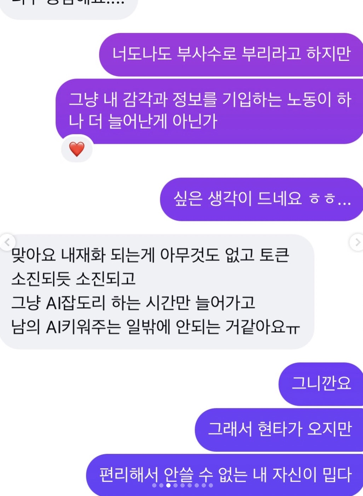

6회차 · ④ 영역 · 그동안 하고 싶었던 일
26가을 AI부사수(TUE) 6회차 · 11월 24일 (화) 19:30 · 5층 오아시스덕수궁 · @Seulki.log
④ 영역은 그동안 하고 싶었던 일입니다. 무엇을, 왜, 어디까지 만들지 기획서에 적고 나면 AI가 첫 결과물을 만듭니다. 마지막에는 1회차부터 받은 스킬을 표로 정리해 돌아봅니다.
AI 소식 · HBR 아티클
수능 뒷이야기와 디자인 용어, AI 에이전트를 다룬 HBR 아티클 여섯 편을 소개합니다.
제 사례 · AI와 만든 다섯 가지
빈티지 영상 공부, 위젯, 문집, 행사 녹음, 검토 표시 상자를 공유합니다.
기획서와 기획 스킬
PRD가 무엇인지, 기획을 돕는 스킬 세 가지를 소개합니다.
쉬는 시간
실습 · 시즌 돌아보기 · 4L
기획서를 쓰고 첫 결과물을 만든 뒤, 시즌 동안 받은 스킬을 돌아보고 4L을 적습니다.
| 회차 | 실습 | AI 소식 | 소개한 도구·스킬 | 받은 스킬·자료 |
| 1회차 9월 15일 | AI에게 맡기고 싶은 일 한 가지 | AI가 틀리는 이유, 자주 듣는 AI 용어 세 가지 | /wed, 인스타 저장글 정리 스킬 | 없음 |
| 2회차 9월 29일 | 클로드 코드 설치, 캘린더 조회 스킬, 업무 스무 가지로 채운 PP 매트릭스 | 소개하지 않았습니다 | 깃허브의 스킬 모음 k-skill | /recap |
| 3회차 10월 13일 | ① 영역 스킬 | 클로드 모델 세 가지의 새 버전, ChatGPT·Gemini 무료 사용 조건 | Codex, Aside, Orca, Headroom | 없음 |
| 4회차 10월 27일 | ② 영역 스킬의 검토 체크리스트 | 지시 없이 일하는 AI, 클로드 비서 앱, 팀원과 AI가 함께 고치는 문서 | 글 검수 훅, /eli5, ponytail, caveman, graphify, karpathy-guidelines | 업무일지 키트(10월 18일 슬랙) |
| 5회차 11월 10일 | CLAUDE.md 규칙 두 줄, Codex에게 검토받은 결과물 | Gemini 대화창에서 문서 만들기, ChatGPT와 Codex 사용량 통합, 페이블 5.2, AI마다 다른 답변 성향, 카파시의 HackerTube, 함께 읽을 거리 다섯 | /insights, claude-md-management, Codex 설치 | 피드백 · 자료 키트, hfk-verify, hfk-worklog |
| 6회차 11월 24일 | ④ 영역의 미뤄 둔 일을 기획서부터 첫 결과물까지 | 수능 뒷이야기, 앤트로픽의 클로드 쓰는 법과 Claude Meetings, 퇴근 뒤 만든 서비스, 디자인 이름 36개, HBR 에이전트 아티클 여섯 편 | PRD, superpowers, /write-spec, grill-me, frontend-design | hfk-research와 남은 스킬, 스타터 모음 |
오늘 실습에서 클로드와 만든 신제품 마케팅안 더 디벨롭 하고 싶습니다
수업 끝나면 포기하고마는 에너지,,,,
레퍼런스를 어떻게 찾고 적용하는 방법
끝까지 파고들 시간과 집념
스킬을 어떻게 조합해서 내 업무에 적용할지에 대한 고민의 시간 자체도 필요하다!
오늘 이어서 답합니다 김향주 님의 마케팅안처럼 더 키우고 싶은 일은 ④ 영역에 있습니다. 수업이 끝나도 이어 가도록 오늘은 기획서를 파일로 남깁니다. 집에서는 AI가 기획서를 읽고 다음 단계부터 이어 갑니다. 자동화는 기획 파트의 '계속 실행되게 하기' 장에서 다룹니다.
3회차부터 5회차까지는 지금 하는 일을 다뤘습니다. 자주 하는 일은 스킬로 맡기고, 초안은 검토 기준으로 확인하고, 가끔 하는 일은 규칙으로 적었습니다.
하던 일이라 무엇이 맞는지 내가 압니다.
해 본 적도 없고 자주 하지도 않는 일입니다. 나만의 도구, 개인 기록 모음, 사이드 프로젝트처럼 시간이 나면 하려고 미뤄 둔 일이 여기에 있습니다.
무엇이 맞는지 아직 모르니, 만들기 전에 AI와 상의해 기준부터 정합니다.
오늘의 목표 골라 오신 ④ 영역 일 한 가지를 기획서로 적고, 기획서대로 AI가 만든 첫 결과물을 확인합니다.
수학 문제를 7초에 푸는 AI 안경이 11월 19일 수능에서 실제로 적발됐습니다.
AI에게 화면을 시킬 때 쓰는 디자인 이름도 소개합니다.
AI 에이전트를 팀원으로 볼지를 두고 HBR에 실린 아티클 여섯 편을 함께 읽습니다.
충남 천안의 한 시험장에서 20대 졸업생이 2교시 수학 시간에 스마트안경을 쓴 혐의를 받습니다. 경찰은 시험 감독을 속인 혐의로 입건해 조사했습니다.
서울신문 11월 20일 보도 기준입니다.
교육부는 4교시가 끝난 오후 4시 37분까지 98명을 적발했습니다. 재난문자 알림이 울려 적발된 수험생이 49명, 전자기기를 소지해 적발된 수험생이 44명입니다. 처분은 12월 11일 성적 발표 전에 정합니다.
경향신문 11월 19일 보도 기준입니다.
쓰는 규칙은 사람이 정합니다 AI 안경은 수학 문제를 7초에 풀지만, 시험장에 들일지는 교육부가 정했습니다. 회사에서 AI를 어디까지 쓸지도 사람이 정합니다. 5회차에 CLAUDE.md에 적은 규칙도 AI에게 맡길 범위를 정한 결정입니다.
'예쁘게 해 줘'보다 '글래스모피즘으로, 카드가 펼쳐지듯 전환해 줘'가 원하는 화면에 가깝습니다. 디자인 이름을 네 편에 아홉 개씩 정리한 글입니다.
스큐어모피즘, 플랫 디자인, 머티리얼, 뉴모피즘, 글래스모피즘, 클레이모피즘, 네오 브루탈리즘, 3D 아이콘, 리퀴드 글래스
하단 탭바, 상단 탭, 드로어, 브레드크럼, 고정 헤더, 플로팅 버튼, 페이지네이션, 무한 스크롤, 뒤로 가기
푸시, 모달 등장, 페이드 스루, 공유 요소, 카드 확장, 줌, 순차 등장, 탭 전환, 시트 확장
타이핑, 페이드 업, 글자 순차 등장, 카운트 업, 스크램블, 마스크 리빌, 하이라이트, 단어 교체, 블러 인
실습 3에서 써 보세요 frontend-design으로 다듬을 때 마음에 드는 이름을 같이 적으면 방향이 빨리 정해집니다.
9-10월호 주제는 'AI, 경영 전략을 혁신하다'입니다. 9-10월호 네 편과 7월에 웹사이트에 실린 두 편 가운데 에이전트를 다룬 글을 골랐습니다. 9-10월호에서 한 편은 에이전트를 팀원으로 생각하라고 하고, 다른 한 편은 직원처럼 대하면 안 된다고 합니다.
| 아티클 | 필자 | 한 줄 요약 |
| AI 에이전트를 팀원으로 생각하라 | 라훌 텔랑 외 · 카네기멜론대 | 에이전트에도 역할, 권한, 승인된 정보원, 기록이 필요합니다 |
| AI 에이전트를 직원처럼 대하면 안 되는 이유 | 매튜 크롭 외 · BCG | AI를 직원이라고 부르면 사람의 책임감과 검토 품질이 떨어집니다 |
| AI 에이전트가 사일로를 넘어 오케스트레이션하는 법 | 크리스 존슨 페레이라 외 · 하버드경영대학원 | 부서마다 흩어진 정보를 AI가 모으고, 결정은 사람이 내립니다 |
| AI 시대, 기업에는 에이전트 매니저가 필요하다 | 수라즈 스리니바산 외 · 하버드경영대학원, 세일즈포스 | 에이전트를 관리하는 일은 IT 부서가 아닌 현업 담당자가 맡습니다 |
| AI는 '알잘딱깔센' 일할 수 없다 | K. 수디르 · 예일 경영대학원 | 매뉴얼에 없는 회사의 진짜 규칙을 먼저 찾아 적어야 합니다 |
| AI 자동화보다 증강을 추구해야 하는 이유 | 케이트 니더호퍼 외 · 베터업, 스탠퍼드대, 옥스퍼드대 | 사람을 줄이는 쪽보다 사람을 키우는 쪽이 장기적으로 앞섭니다 |
11월 29일 (일) 10:30 HBR 포럼 '팀원으로 생각하라'와 '직원처럼 대하면 안 되는 이유' 두 편을 오아시스 덕수궁에서 함께 읽습니다. 제목을 누르면 HBR 코리아 웹사이트에서 읽을 수 있고, 일부는 구독이 필요합니다.
챗GPT 같은 생성형 AI는 틀린 말을 할 위험이 있고, 에이전트는 틀린 행동을 할 위험이 있습니다. 그래서 설치하면 끝나는 소프트웨어 대신, 관리가 필요한 새 인력으로 대하라고 합니다.
BCG가 관리자 1,261명에게 오류가 섞인 문서를 검토하게 했습니다. 작성자를 'AI 도구'라고 알린 그룹과 'AI 직원 ALEX-3'이라고 알린 그룹을 비교했고, 이미 조직도에 AI 에이전트가 있는 회사의 관리자들에게서 차이가 났습니다.
두 주장이 만나는 곳 앞의 글은 에이전트에게 사람처럼 역할과 한도를 정해 주라고 하고, 뒤의 글은 에이전트에게 사람처럼 책임을 넘기지 말라고 합니다. 2024년 에어캐나다 사건에서도 챗봇이 잘못 안내한 책임은 항공사에 돌아갔습니다.
60일 뒤 관세가 오르니 재고를 미리 들이자는 CEO의 결정이 몇 주째 실행되지 못합니다. 창고 공간과 공급업체의 조건 같은 정보가 부서마다 사람 머릿속에 흩어져 있어서입니다.
세일즈포스의 AI 에이전트는 회사로 들어오는 고객 지원 문의의 약 74%를 해결합니다. 잭 스타우버는 대시보드와 성과표로 AI 에이전트를 관리하는 에이전트 매니저입니다.
필자들의 전망 에이전트 매니저는 앞으로 12~18개월 안에 AI를 앞세우는 기업의 기본 직책이 될 것이라고 봅니다.
고액 자산가 고객이 수익자 변경을 요청했고, AI 에이전트들은 모두 규정대로 처리했습니다. 담당 어드바이저라면 지난 미팅에서 들은 상속 고민을 떠올리고 전화했을 것입니다. 고객은 한 달 뒤 계좌를 옮겼습니다.
필자들이 사무직 1,294명을 조사해 보니, 회사가 AI로 역량을 키워 준다고 느낀 직원은 이직 의향이 32% 낮았습니다. 필자들의 다른 연구에서는 AI 사용을 강요받는다고 느낀 직원이 품질 낮은 AI 결과물을 65% 더 많이 냈다고 답했습니다.
두 아티클이 함께 걱정하는 것 신입이 하던 일을 AI가 맡으면 일을 보는 안목을 익힐 기회도 사라집니다. 수디르는 신입의 일을 자동화하기 전에 안목을 키울 다른 방법부터 마련하라고 하고, 증강 아티클은 신입 일자리를 없애면 미래의 리더가 줄어든다고 경고합니다.
3회차에 일을 맡기고, 4회차에 검토 기준을 주고, 5회차에 규칙대로 일하게 했습니다. 아티클이 말하는 권한 넓히기 순서와 비슷합니다. 보내는 버튼처럼 되돌릴 수 없는 일은 계속 직접 누릅니다.
기획서를 쓸 때도 'AI가 내가 아는 무언가를 놓치고 있는가?'를 묻습니다. 수디르의 세 질문에 답한 내용은 CLAUDE.md에 규칙으로 넣습니다.
클로드가 만든 결과물도 보내는 사람의 이름으로 나갑니다. 'AI가 틀렸다'고 넘기지 않으려면, 5회차처럼 다른 AI에게 한 번 더 검토받고 마지막 확인은 직접 합니다.
세일즈포스는 AI 자격증보다 현장을 아는 사람을 에이전트 매니저로 뽑았습니다. 업무를 가장 잘 아는 현업 담당자가 AI도 가장 잘 관리합니다.
회사에 제안할 때 쓸 숫자 AI를 강요받는다고 느낀 직원은 품질 낮은 결과물을 65% 더 냈다고 답했습니다. BCG 조사에서 AI 활용을 앞서가는 회사는 관리자가 AI를 직접 쓰는 모습을 보여 줄 가능성이 3.5배 높았습니다.
10월부터 11월까지 AI와 함께 만든 다섯 가지를 공유합니다.
일의 크기에 따라 만들기 전에 적어 둔 내용이 달랐습니다.
빈티지 옷 판매를 공부하며 보던 유튜브 채널이 아홉 곳이었습니다. 영상을 다시 볼 시간은 없어서, 영상마다 노트를 만들고 결정에 필요한 내용만 따로 모았습니다.
10월 15일에 11편으로 순서를 정했고, 11월 13일에 같은 순서로 261편을 한 번에 정리했습니다.
노트 291편은 원본으로 두고, 결정에 필요한 내용만 네 갈래 리서치 노트로 올립니다.
'첫 매입은 가장 가까운 원주 사입처에서 20kg으로', '값은 판매 완료 두 곳 이상을 보고 정한다' 같은 결론이 여기서 나왔습니다.
자료 모으기는 오늘 선물로 드립니다 실습 뒤에 스킬 세 가지를 드립니다. hfk-research는 출처를 붙여 조사하고, insane-search는 막힌 사이트도 읽어 옵니다. hfk-youtube는 유튜브를 노트로 남깁니다.
다섯 개 모두 구조가 같습니다. 아이폰의 Scriptable 앱이 위젯을 그리고, 휴대폰과 맥은 iCloud 파일로 주고받습니다. 맥은 정한 시각마다 클로드 코드를 실행해 내용을 채웁니다.
맥이 매일 새벽 5시 40분에 하루 끼니와 운동을 제안합니다. 처음에는 기록이 18분 늦게 반영돼서, 칼로리는 휴대폰이 바로 세도록 바꿨습니다.
코레일에 AI가 자동으로 로그인하는 방식은 매크로로 잡혀 막혔습니다. 그래서 휴대폰에서 날짜, 구간, 열차, 좌석을 고르면 구글 캘린더에 들어가게 바꿨습니다.
하고 싶은 것 가운데 오늘 해 볼 것 세 개를 보여 줍니다. 휴대폰에서 '했어요'를 누르면 맥이 목록에 표시합니다. 가 볼 곳 79곳 가운데 68곳의 주소를 찾았습니다.
작은 일은 한 줄로 시작했습니다 건강 위젯은 '먹는 것도 운동도 제안받는 건강 위젯'이라는 한 줄 요청이 시작이었습니다. 기획서 없이 만들고, 매일 쓰면서 불편한 곳을 고쳤습니다. 3주 동안 고친 내용은 설명 파일에 남겼습니다.
제가 호스트를 맡은 HFK 클럽 '유명하지 않은 사람들의 에세이 클럽'의 26가을 문집입니다. AI가 스크립트로 책 디자인 프로그램 InDesign을 다뤘고, 인쇄소 사이트는 Aside가 열었습니다.
결과물은 인쇄할 PDF로 확인합니다 AI가 지운 형광펜 54곳이 PDF에는 그대로 찍혀 있었습니다. 책등 글씨는 이틀 동안 뒤표지에 찍혀 있었고, PDF 글자 위치를 재다가 찾았습니다. 11월 21일에는 형광펜을 고칠 때마다 쪽별 글자 범위를 고치기 전과 대조했습니다. 190쪽 배치는 한 번도 바뀌지 않았습니다.
HFK 행사가 끝나면 녹음을 받아 적어 후기를 씁니다. 10월 28일부터는 Aside가 클로바노트 웹 화면을 대신 눌러 녹음했습니다. 11월 13일 컨퍼런스 후기가 이틀 전 북토크 녹취로 만들어진 뒤 방식을 다시 살폈습니다.
Aside가 행사 시작 전에 직전 행사의 녹취를 받아 왔습니다. 8월 1일 녹음은 2분부터 받아쓰기가 끊겼고, 4,049줄 가운데 3,997줄이 '아.'였습니다. 클로바노트는 끊겨도 알려 주지 않았습니다.
녹음 두 개의 앞 10분을 클로바노트, Gemini 3.8 Flash, OpenAI 모델 다섯 개로 받아 적었습니다. Gemini가 가장 덜 틀렸고, 말한 사람 7명을 나눠 적었습니다.
녹음은 노트북 마이크로 하고, 행사가 끝나고 10분 뒤 저절로 멈춥니다. Gemini가 10분씩 받아 적고, 실패한 구간은 OpenAI 모델이 맡습니다. 저는 행사 전날 DM에 ✅만 남깁니다.
어느 서비스로 바꿀지는 제가 정했습니다 AI는 시험 결과를 표로 정리했습니다. 11월 16일에는 시험 녹음으로 녹음부터 받아쓰기 검사까지 확인했습니다. 새 흐름은 다음 이벤트에서 처음 씁니다.
상품 상세페이지를 검토할 때 고칠 문장을 드래그하고 메모를 적습니다. 처음에는 VS Code 안의 검토 탭에서만 표시할 수 있었습니다. 11월 21일부터는 아임웹과 이벤터스의 실제 페이지에도 같은 메모 상자가 뜹니다.
상세페이지와 기획안을 검토 탭에 모아 띄웁니다. 문장을 드래그하고 메모를 적으면 표시로 저장됩니다. 11월 21일까지 849건을 표시했습니다.
Aside에게 '메모 상자 띄워'라고 하면 보고 있는 페이지에 상자가 뜹니다. 엔터를 누르면 저장되고, 남긴 표시는 노란색으로 칠해집니다. 칠한 문장에 커서를 올리면 메모가 보이고, 그곳에서 고치거나 지웁니다.
검토 탭의 수정사항 반영 버튼을 누르면 클로드가 표시대로 원고를 고치고 글 검수까지 합니다. 메모만으로 고치기 어려운 표시는 '확인 필요'로 남깁니다.
쌓인 표시는 글 검수 기준이 됩니다 표시 557건을 문장 교정 사례집으로 묶었고, 덱과 공지를 검수할 때 사례집과 대조합니다. 처음 만든 상자는 Aside가 새로 연 탭에서 메모를 저장하지 못했습니다. 지금은 노트북에 늘 켜 둔 감시 프로그램이 상자가 뜬 탭을 모두 맡습니다. 11월 21일 하루 동안 실제 페이지에서 37건을 표시했습니다.
해 본 적 없는 일을 바로 시키면, AI는 정하지 않은 부분을 임의로 채웁니다.
무엇을, 누구를 위해, 어디까지 만들지 먼저 적으면 AI가 기준에 맞춰 만들고 스스로 확인합니다.
PRD → 기획을 돕는 스킬 세 가지 → 나눠 만들기 → 다듬기 → 계속 실행되게 하기
PRD는 Product Requirements Document의 줄임말입니다. 회사에서 새 서비스를 만들 때 기획자가 개발팀에 건네는 문서입니다. 무엇을 왜 만드는지, 다 됐다는 기준이 무엇인지 적습니다. 이제는 AI에게 일을 맡길 때 같은 문서를 씁니다.
지금 무엇이 불편한지 한두 문장으로 적습니다.
나 혼자인지, 팀인지, 고객인지 적습니다. 어떤 기기에서 쓰는지도 적습니다.
꼭 있어야 하는 기능을 세 가지 안쪽으로 적습니다.
AI는 시키지 않은 기능까지 붙이기 쉽습니다. 뺄 것을 먼저 적어 두면 첫 결과물의 범위가 작아집니다.
'아침 9시에 휴대폰에서 열면 오늘 일정 세 개가 보인다'처럼 눈으로 확인할 수 있게 적습니다.
정하지 못한 것은 '모름'이라고 적습니다. 그래야 AI가 빈 곳을 지어내지 않습니다.
기획서는 내가 쓰지 않아도 됩니다 AI가 질문하고 내가 답하면 AI가 기획서로 정리합니다. 나는 질문에 답하고, 마지막에 '다 됐다는 기준'이 맞는지만 확인합니다.
계획의 빈 곳을 질문으로 하나씩 끝까지 캐묻고, 질문마다 추천 답을 같이 줍니다. 내가 확인하기 전에는 만들기를 시작하지 않습니다.
머릿속 생각이 아직 흐릿할 때 씁니다.
앤트로픽이 만든 기획 업무 플러그인에 들어 있습니다. 아이디어 한 줄을 주면 목표, 하지 않을 것, 성공 기준, 다 됐다는 조건이 담긴 기획서로 정리합니다.
팀에 보여 줄 기획서가 필요할 때 씁니다.
묻기, 계획 쓰기, 나눠 실행하기를 순서대로 합니다. 아이디어를 말하면 질문으로 설계를 정하고, 작은 작업 목록으로 나눈 뒤 하나씩 만들고 확인합니다.
기획서를 쓴 뒤 실제로 만들 때까지 이어 갑니다.
이름만 알아 두실 것 spec-kit은 깃허브가 만든 기획 방법입니다. 요구사항, 계획, 작업 목록을 차례로 쓰는 원리는 같지만, 설치에 파이썬 도구가 필요해 오늘은 소개만 합니다.
서로 기다릴 필요가 없는 일은 여러 AI에게 동시에 맡깁니다. 큰 일은 작업마다 새 AI에게 하나씩 맡기고, 끝날 때마다 다른 AI가 검토합니다.
기획서가 없으면 AI마다 다른 기준으로 만듭니다. 나눠 맡길수록 기획서가 중요해집니다. 여러 AI가 팀처럼 일하는 agent teams도 이름만 알아 두세요.
frontend-design은 앤트로픽이 만든 디자인 스킬입니다. 흔한 기본값을 피하고 방향부터 정한 뒤 화면을 만듭니다. 웹페이지, 안내문, 발표 자료에 바로 씁니다.
design-taste는 제가 다 만든 화면을 점검할 때 쓰는 스킬입니다. 공개된 디자인 스킬 세 가지를 합친 것이라 설치 주소가 하나로 정해져 있지 않습니다. 설치 대신 '다 만든 화면을 흔한 AI 디자인 실수 기준으로 점검해 줘'라고 부탁하면 됩니다.
UI/UX Pro Max는 권하지 않습니다 디자인 자료를 파이썬으로 찾는 스킬이라 회사 컴퓨터에서는 작동하지 않는 경우가 많습니다. 스타일을 아주 많이 비교할 때만 씁니다.
정해 둔 일이 생길 때마다 저절로 실행됩니다. 10월 18일 슬랙으로 드린 업무일지 키트도 클로드가 한 일을 업무일지에 저절로 적습니다.
/schedule은 앤트로픽의 컴퓨터에서 정한 시각마다 실행됩니다. 노트북을 꺼도 되지만 최소 1시간 간격이고, 노트북에 있는 파일은 읽지 못합니다.
/loop은 대화창이 켜져 있는 동안 같은 일을 되풀이합니다. 멈추는 조건을 꼭 같이 적습니다. 돌고 있는 예약은 /tasks에서 보고 멈춥니다.
4회차에 보여 드린 휴무일 자동 답변의 슬랙 봇이 예입니다. 늘 켜져 있다가 초안 아래 버튼을 누르면 답장을 보냅니다.
노트북이 잠든 사이 멤버가 누른 버튼은 처리되지 않았습니다. 그래서 11월 13일에 개인 계정이 필요 없는 자동 작업 44개를 오아시스에 둔 맥미니로 옮겼습니다.
양승희 님의 자동화는 예약 실행부터 매주 같은 때에 하는 일이라면 /schedule로 정한 시각에 돌립니다. /schedule은 노트북에 있는 파일을 읽지 못하므로, 필요한 내용은 예약 문장 안에 직접 적습니다.
/plugin marketplace add anthropics/claude-plugins-official/plugin install superpowers@claude-plugins-official/plugin install frontend-design@claude-plugins-official
5회차에 claude-md-management를 설치했다면 첫 줄은 건너뜁니다.
/plugin marketplace add anthropics/knowledge-work-plugins/plugin install product-management@knowledge-work-plugins
설치하지 않아도 실습 1은 그대로 진행합니다. 실습 1 문장이 /write-spec과 같은 순서로 묻습니다.
설치한 뒤에는 클로드 코드를 껐다가 다시 켭니다 회사 컴퓨터는 보안 설정 때문에 설치가 막힐 수 있습니다. 막히면 설치 없이 실습 1부터 시작해도 됩니다.
클로드 코드가 읽는 노트북 문서와 프로젝트에 올린 문서는 대화하는 동안에만 참고합니다. 모델은 바뀌지 않습니다. 다음 대화로 이어지는 것은 CLAUDE.md와 메모리 같은 파일입니다.
Free, Pro, Max 같은 개인 요금제는 모델 개선 설정이 켜져 있으면 클로드 코드 대화도 학습에 쓰고 5년 보관합니다. 끄면 학습에 쓰지 않고 30일 보관합니다. Team, Enterprise, API는 따로 동의하지 않으면 학습에 쓰지 않습니다.
수많은 대화에서 어떤 답이 잘 통했는지 경향을 배웁니다. 모델은 문서를 그대로 저장하지 않으니, 제 파일이 다른 사람의 답에 그대로 나오는 구조는 아닙니다.
설정을 꺼도 문서는 앤트로픽 서버로 갑니다 설정을 끄면 학습만 막고, 이미 학습에 들어간 데이터는 빠지지 않습니다. 그래서 네 가지를 같이 합니다. 설정 → 개인정보 보호에서 모델 개선을 끕니다. 회원 이름과 연락처는 '회원A'처럼 바꿔서 넣습니다. 클로드 코드에는 작업용 폴더만 엽니다. 주민번호, 계좌번호, 비밀번호는 어떤 AI에도 넣지 않습니다.

'그냥 내 감각과 정보를 기입하는 노동이 하나 더 늘어난게 아닌가'
'내재화 되는게 아무것도 없고 토큰 소진되듯 소진되고'
같은 설명을 두 번 하지 않도록 기준을 CLAUDE.md와 메모리에 적어 둡니다. 결정은 제가 하고, 결정한 이유도 파일로 남겨 다음 일에 씁니다. 다음 장은 제가 AI부사수를 하는 이유입니다.
AI가 어렵다는 문턱을 넘는 사람이 많아져야 합니다. 그래야 여러 사람의 생각을 일에 담을 준비가 됩니다.
아무 생각 없이 쓰던 AI가 어떻게 움직이는지 짚어 드립니다. AI가 왜 틀리는지 알면 맡길 일과 확인할 일이 나뉩니다.
회사에서는 실습할 수 없는 분이 많습니다. 그래서 세션 시간을 AI를 제대로 써 보는 시간으로 씁니다.
AI가 멤버의 자료를 찾아 읽고 같은 규칙으로 일하도록 작업 폴더를 미리 세팅해 드립니다. 멤버는 받아서 바로 씁니다.
각자 말없이 알고 있던 요령을 스킬과 메모리로 적어 둡니다. 적어 둔 요령은 다음 사람도 그대로 씁니다.
메일 정리 같은 반복 업무에서 그치지 않습니다. 해 본 적이 없어 미뤄 둔 일도 AI와 함께 합니다.
일을 맡기기 전에 제가 가진 데이터가 무엇이고 어디에 있는지 먼저 살핍니다. 결정은 느낌 대신 데이터를 근거로 합니다.
오늘 실습은 6번입니다 10월 28일에 여섯 가지를 적었고, 11월 22일에 7번을 더했습니다. 쉬는 시간이 끝나면 해 본 적이 없어 미뤄 둔 ④ 영역 일을 AI와 기획서부터 씁니다.
쉬는 시간이 끝나면 바로 실습을 시작합니다.
VS Code에서 작업 폴더를 열고, 골라 오신 ④ 영역 일을 떠올려 두세요.
실습 1에서는 AI의 질문에 답하며 ④ 영역 일의 기획서를 씁니다.
실습 2에서는 기획서대로 AI가 첫 결과물을 만들고, 다 됐다는 기준을 하나씩 확인합니다.
설치 5분 · 실습 1 기획서 20분 · 실습 2 첫 결과물 20분 · 실습 3 다듬기 5분
제 ④ 영역 일인 ' (미뤄 둔 일 이름) '의 기획서를 쓰고 싶습니다. 아직 만들지 마세요.
1. pp-매트릭스.md와 CLAUDE.md를 먼저 읽고, 왜 지금까지 미뤄 왔는지부터 물어봐 주세요.
2. 질문은 한 번에 하나씩 하고, 질문마다 추천 답을 같이 알려 주세요.
3. 만드는 이유, 쓰는 사람, 꼭 필요한 기능, 이번에 하지 않을 것, 다 됐다는 기준, 아직 모르는 것을 모두 채울 때까지 물어봐 주세요.
4. 다 됐다는 기준은 눈으로 확인할 수 있는 문장 세 개로 적어 주세요.
5. 제가 답하지 않은 것은 지어내지 말고 '모름'으로 남겨 주세요.
6. 다 되면 결과물 폴더에 기획서.md로 저장하고, 첫 결과물에서 뺄 기능을 한 줄로 알려 주세요.
superpowers를 설치했다면 첫 줄 끝에 'superpowers의 brainstorming 순서로 진행해 주세요'를 덧붙입니다. 질문이 끝나면 설계를 몇 부분으로 나눠 하나씩 확인받습니다.
결과물 폴더의 기획서.md를 읽고 첫 결과물을 만들어 주세요.
1. 시작하기 전에 할 일을 세 단계에서 다섯 단계로 나눠 보여 주세요. 제가 확인하면 시작합니다.
2. 기획서의 '이번에 하지 않을 것'에 적힌 기능은 넣지 마세요.
3. 다 되면 '다 됐다는 기준' 세 개를 하나씩 직접 확인하고, 됨, 안 됨, 확인 못 함으로 표를 만들어 주세요.
4. 만들다가 기획서와 다르게 정한 것이 있으면 기획서.md에도 고쳐 적어 주세요.
첫 단계만 만들어도 됩니다. 기획서와 단계 목록을 저장해 두었으니 집에서 '기획서.md의 2단계부터 이어서 해 줘'라고 하면 이어집니다.
결과물이 화면이나 문서라면 'frontend-design 스킬로 다듬어 주세요. 고치기 전에 방향 세 가지를 먼저 보여 주세요'라고 붙여 넣습니다.
hfk-research는 출처가 붙은 자료조사를 합니다. 출처 없는 문장은 쓰지 않고, 못 찾은 것은 못 찾았다고 남깁니다.
insane-search는 막힌 사이트에서도 다른 방법을 차례로 시도해 글을 읽어 옵니다. 유튜브 자막, 레딧, 네이버 블로그처럼 그냥 열면 막히는 곳도 읽습니다.
유튜브 영상을 요약 노트로 남기는 hfk-youtube도 스타터 모음에 있습니다.
넣는 법 스타터 모음 github.com/skaug12/hfk-ai-starter 에 스킬 19개가 있습니다. 클로드 코드에 '링크의 스킬 가운데 hfk-research를 작업 폴더에 넣어 줘'라고 하고 링크를 붙여 넣습니다. 11월 25일 오후 2시에 슬랙에 링크를 모두 모아 올립니다.
| 단계 | 스킬과 도구 | 언제 쓰나 |
| 1. 작업 폴더 | CLAUDE.md, hfk-ai-starter, 업무일지 키트, 피드백 · 자료 키트 | 일을 시작하기 전에 한 번 만들어 둡니다 |
| 2. 돌아보기 | /insights, /recap, /usage | 한 달에 한 번, 창을 여러 개 열었을 때, 사용량이 걱정될 때 |
| 3. 덜 쓰고 덜 읽기 | ponytail, caveman, graphify, Headroom, karpathy-guidelines | 사용량이 빨리 닳을 때, AI가 시키지 않은 곳까지 고칠 때 |
| 4. 한 번 더 확인 | Codex, hfk-verify, 글 검수 훅, Orca | 상사, 고객, 외부로 나가기 전에 |
| 5. 기획부터 | grill-me, /write-spec, superpowers | 해 본 적 없는 큰 일을 시작할 때 |
| 6. 보기 좋게 | frontend-design, design-taste, /eli5 | 화면, 안내문, 발표 자료를 만들 때 |
| 7. 기록 정리 | claude-md-management, /revise-claude-md | CLAUDE.md가 길어졌을 때, 대화를 마칠 때 |
| 8. 스스로 움직이게 | 훅, /schedule, /loop, Aside, k-skill | 같은 일을 정한 때마다, 정한 일이 생길 때마다 |
다 쓰지 않아도 됩니다 앞 단계가 없으면 뒤 단계가 할 일이 없습니다. 작업 폴더와 업무일지가 쌓여야 /insights가 볼 것이 생깁니다. 1단계와 2단계부터 꾸준히 쓰세요.
골라 오신 ④ 영역 일과, 그동안 미뤄 온 까닭을 말씀해 주세요.
'이번에 하지 않을 것'에 적은 것 한 가지를 말씀해 주세요.
집에 가서 기획서의 몇 단계부터 이어 갈지 말씀해 주세요.
비슷한 일을 고른 분이 있다면 서로의 기획서를 바꿔 읽어 보세요. 내가 묻지 않은 질문이 보입니다.
11월 25일 오후 2시에 슬랙에 1회차부터 6회차까지 발표 자료와 소개한 스킬을 한 글에 모아 올립니다.
/insights를 실행해 6회차 리포트와 비교합니다. 자꾸 나오는 말은 CLAUDE.md에 규칙으로 적습니다.
6회차에 쓴 기획서처럼, ④ 영역의 다른 일도 기획서부터 시작합니다.
스킬로 저장하거나 CLAUDE.md에 적습니다. 그래도 지켜지지 않으면 훅으로 막습니다.
질문은 슬랙 스레드에 남겨 주세요 시즌이 끝나도 막힌 곳 한 줄이면 답하겠습니다.
슬랙 캔버스 4L 리뷰_26가을_AI부사수(TUE)의 6회차 칸에 적어 주세요. 오늘은 시즌 전체를 돌아보며 적어 주세요.
좋았던 것
새로 알게 된 것
부족했던 것
바라는 것
해 본 적 없는 일은 기획서부터 씁니다.
무엇을 왜 만드는지, 다 됐다는 기준이 무엇인지 적으면 AI가 기준에 맞춰 만들고 스스로 확인합니다.
26가을 시즌 동안 함께해 주셔서 고맙습니다.
26가을 AI부사수(TUE) 6회차 · 11월 24일 (화) · @Seulki.log